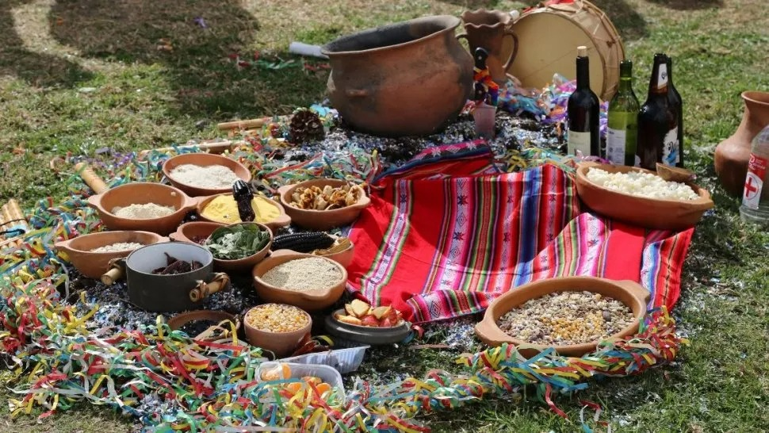

VIDA COTIDIANA
Entre los indigenas, la vida diaria de la gente común era muy simple, con alimentación poco variada, viviendas y ropas sencillas. Al alba, las mujeres escendían el fuego y preparaban harina de maíz, mientras los hombres partían a sus tareas. En contraste, el lujo y el refinamiento solo aparecían en algunas ceremonias y en la vida de los nobles, con sus alajas, ropas finas y amplias viviendas, a veces rodeados por bellos jardines.

Todo el comportamiento, hasta la manera de vestir, estaban dictados por normas que se debían respetar, bajo pena de graves castigos. Los grandes momentos de la vida, como nacimiento, matrimonio y muerte se acompañaban con ritos, que eran iguales tanto para la gente común como para las personas de alto rango. Además, antes de tomar decisiones importantes, como casarse o hacer un largo viaje, se pedia a un adivino que interpretara las señaales de los dioses para saber que hacer.
Las enfermedades eran atribuidas a los dioses y se curaban con ofrendas, otros creian en la magia de los brujos. Además, tenian muchas plantas medicinales.
Para anesteciar al enfermo, el medico (a veces mujer) empleaba ciertas drogas obtenidas de hongos u hojas de plantas como la coca. Sabian curar fracturas, coser heridas, hacer masajes y sangrías.
Desde muy chicos, niños y niñas aprendían a trabajar y a comportarse en sociedad. Se les enseñaba lo esencial para saber alimentarse y defenderse, pero también música y danza, que eran frecuentes en las ceremonias religiosas. Con variantes en cada caso, en los pueblos habia muschos entretenimientos, desde fiestas hasta competencias deportivas y juegos de azar.
Instruian a los hijos desde los tres años. El padre les enseñaba su oficio si era artesano, o las tareas rurales. Con las madres, las niñas aprendian a cocinar, moler maíz, hilar y tejer.
Los casos judiciales más simples se podian tratar en simples en localidades pequeñas, pero los casos más graves eran sometidos a los jueces de las grandes ciudades. En los procesos eran sometidos a los jueces de las grandes ciudades. En el proceso cada parte se hacia escuchar
No habia pena de prisión, los asesinatos y robos se castigaban con la muerte, y otros delitos se pagaban con exilio. El condenado a muerte podia ser ahorcado, muero a pedradas o arrojado a un precipicio. Otros los ofrecian como sacrificios a los dioses.
DIOSES INDIGENAS ARGENTINOS
PachaMama:
Es un dios femenino, que produce, que engendra, encargada de propiciar la fertilidad en los campos. La Pachamama es la madre de los cerros y los hombres; la que madura los frutos y multiplica el ganado, pudiendo conjurar heladas y plagas y dar suerte en la caza. Se la invoca también cuando sobrevienen ciertas enfermedades o se está de viaje, para no apunarse ni rezagarse en el camino. Fuente

El 1º de agosto se celebra el día de la madre tierra. Por la tarde en un pozo se ofrenda a la Pachamama lo que ésta ha producido: maíz, hojas de coca, frutas, y parte de la comida preparada para la ocasión. La fiesta, con canto y baile, dura hasta el amanecer.
FuenteTradición
Caña con ruda
A esta combinación de planta y bebida, el imaginario guaraní le fue adjudicando propiedades y virtudes. De allí derivó la creencia popular que considera a la caña con ruda como un conjuro contra la envidia y la mala suerte. Este brebaje se consume “para espantar los males del invierno”.
FuenteNguenechén
Es el Dios supremo, creador de todo, quien llevó al pueblo Mapuche a sus territorios y vela eternamente por su bienestar. Es poseedor de dos pares de atributos opuestos: sexo masculino y femenino, juventud y ancianidad. Se le asocia con el equilibrio y el bienestar espiritual. Fuente
Tupá
La figura central en la mayoría de las leyendas guaraníes de la creación es Tupá (Tupã en guaraní), el dios supremo o dios del trueno. Con la ayuda de la diosa de la luna, Arasy, Tupã descendió a la tierra en un lugar descrito como un monte en la región de Aregua. Desde este sitio creó todo sobre la tierra, incluyendo el océano, la flora y los animales. También colocó las estrellas en el firmamento. Fuente
Arasy
Es una poderosa diosa de la mitología guaraní. Es la esposa del dios Tupã y juntos gobiernan sobre los cielos y la tierra. Se le atribuye la creación de la naturaleza y todos los seres vivos que habitan en ella. Es la guardiana de la Luna, y desde su morada celestial, supervisa y protege el ciclo de la naturaleza, asegurándose de que la vida prospere en armonía. Como diosa de la fertilidad y la abundancia, se la invoca para bendecir las cosechas y asegurar la prosperidad de las tribus guaraníes. Fuente
LEYENDAS INDIGENAS
Las leyendas de los pueblos originarios son relatos que combinan la realidad y la fantasía, y que dan cuenta del origen de las creencias religiosas y de los conocimientos ancestrales. Para los grupos indígenas, estas historias son más que cuentos entretenidos, son mitos que ordenan y dan sentido a la vida del hombre. Son narraciones de sucesos fantásticos que se transmiten por tradición. Se ubican en un tiempo y lugar similar al de los miembros de una comunidad, lo que aporta cierta verosimilitud al relato.
VOLVER
Fuente: Revista Genios
Editorial Argentino S.A